Before
With 54 engineers and 9 PMs for every UX designer, involving design at every handoff could not scale. Work moved from a design file to handoff, then page-by-page implementation and a separate quality review.
From design ideas to production code
What happens when AI can work directly with a product’s code, design system, patterns and rules — instead of starting from a blank canvas?
I saw an opportunity to create an AI-native design platform that could streamline the path from design ideas to production code. That idea became Petra Studio. The work brought UX, engineering, and product together around a shared foundation for exploring, validating, and building new experiences.
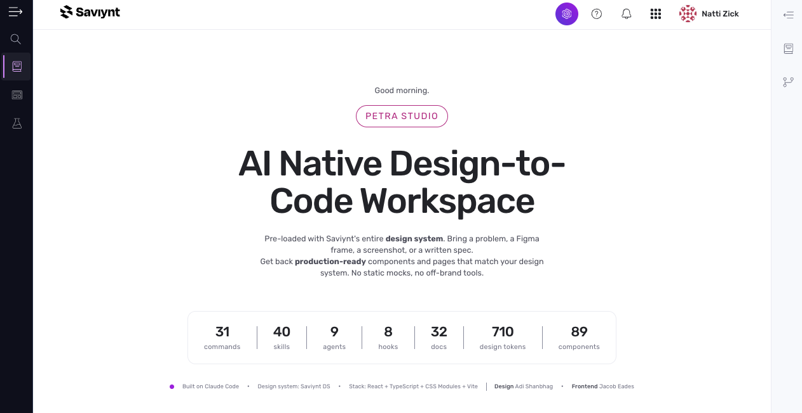
01 · The opportunity
When I joined, design and engineering were working from different foundations. Figma and the React code library had diverged, accessibility updates were not consistently reflected in production, and new experiences were often hand-coded page by page. Prompt-to-code tools were beginning to make ideation faster, but they stopped at the prototype.
With 54 engineers and 9 PMs for every UX designer, involving design at every handoff could not scale. Work moved from a design file to handoff, then page-by-page implementation and a separate quality review.
Idea → working experience → validate in context → production code
02 · Petra, the foundation
AI changed how we could work. I hired a UI engineer into UX, and in collaboration with UI Architecture and UI Front End, UX took ownership of the shared production code library and design system. Petra became the common foundation for UX and Engineering.
Petra is the shared production code library and design system. Petra Studio sits on top of it, giving AI a working environment where it can generate and iterate with the same components, patterns, tokens, and rules used to build the product. Petra Studio was optimized for Claude Code, the team’s main environment, and also works across AI systems, including Kiro.
Petra is an AI-evolved React library. Its components were rebuilt to make it easier to move existing React experiences toward the new foundation. New products use Petra from design through execution; existing products can migrate progressively behind a feature flag.
Translate intent into production code, not prototypes.
Evolve components, patterns, templates, and the UI shell quickly.
Support products and future needs without rebuilding from scratch.
Make accessibility, security, governance, and validation part of the foundation.
Streamline workflows and modernize existing experiences.
PM · UX · Engineering
AI workspace · specs · skills · quality checks
Production code · components · tokens · patterns
Working, production-aligned experiences
03 · Working in Petra Studio
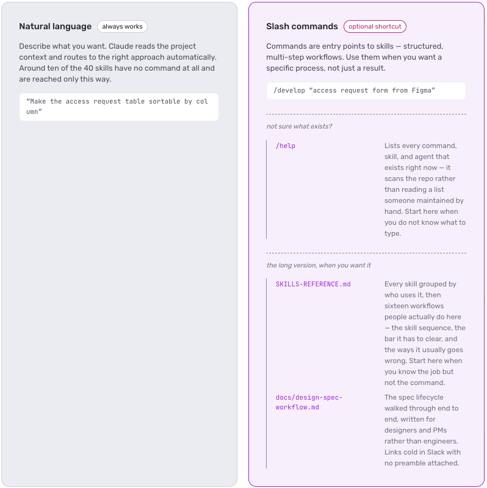
Plain language works for everything. Slash commands are optional shortcuts to structured workflows, called skills. People can choose one when they want a specific process, with its own questions and output format, rather than just a result.
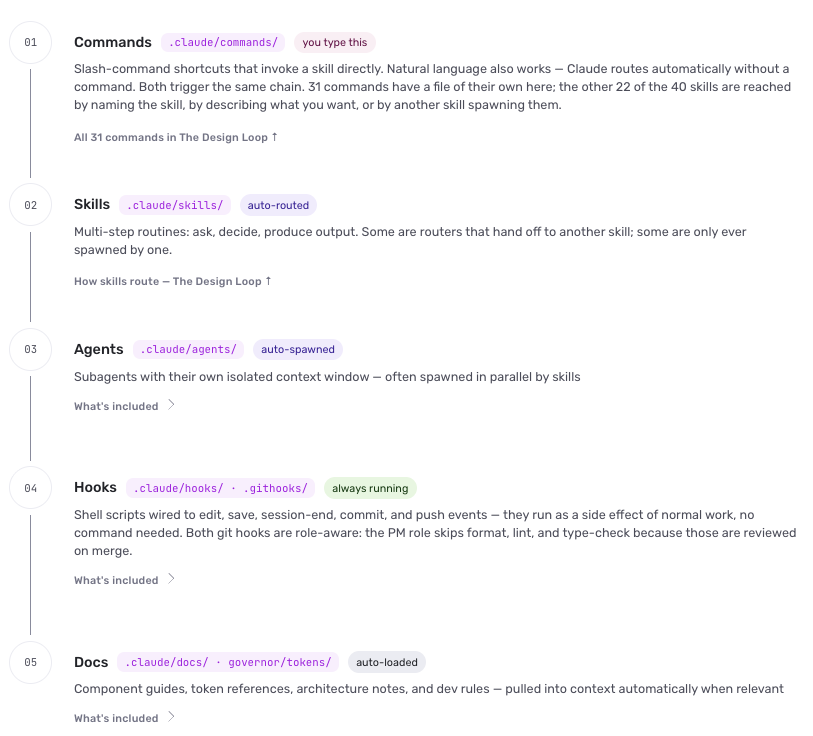
Commands, skills, agents, hooks, and docs each have a distinct job. Commands are what people type. Skills run multi-step routines. Agents take on focused work in parallel, each with its own context. Hooks run automatically as people edit, save, and commit. Docs bring the right component guides, tokens, and rules into context when they are needed.
04 · Generate and build
Petra Studio connected an idea to the product’s real code and design system, so the result could be explored and iterated as a working experience instead of stopping at a static mockup.
Describe the experience and the problem it should solve.
Generate with production components, patterns, tokens, and rules.
Review a working experience and refine it before handoff.
One prompt · four minutes
“Create a flow that allow a human user to request access to an AI agent. It should start as a shortcut on the Saviynt main page.”The complete prompt given to Petra Studio
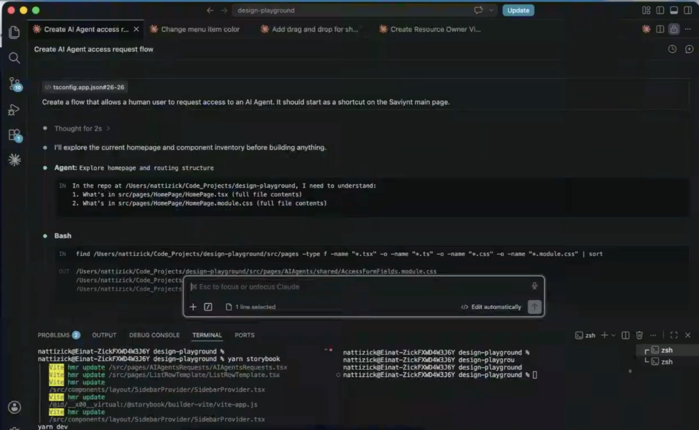
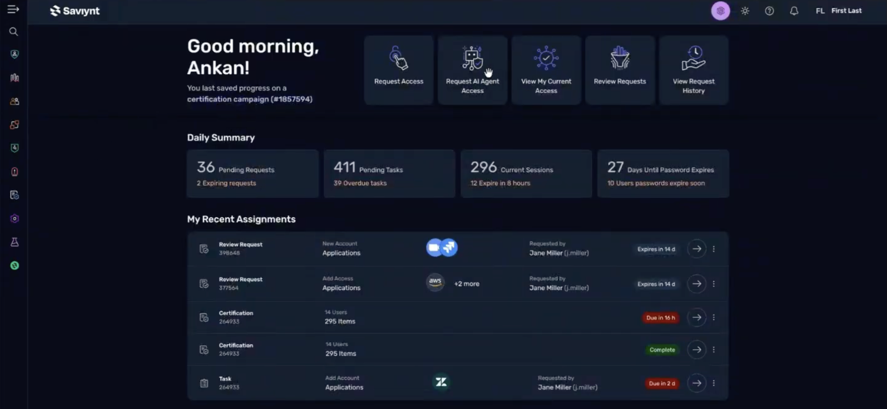
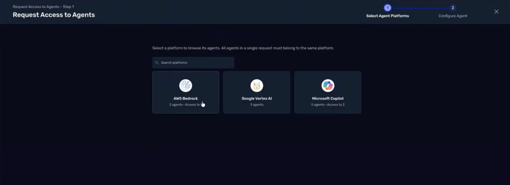
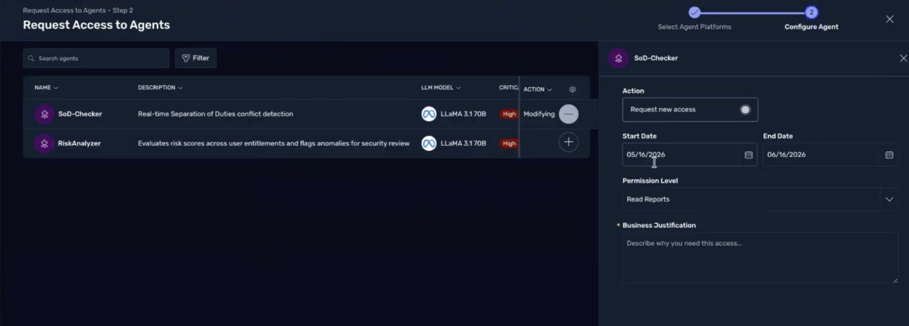
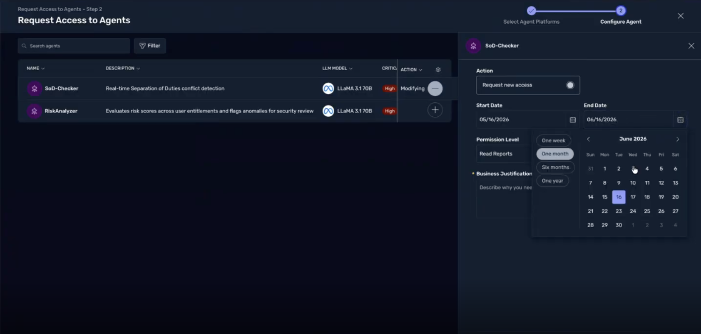
That short prompt produced the homepage shortcut, a two-step request flow, a new side panel, and a date picker built from our existing components. The result started from the product’s real patterns and design system.
Petra Studio could generate pages at different levels of complexity, from simpler layouts to richer product experiences. These examples show the range of designs it could create.
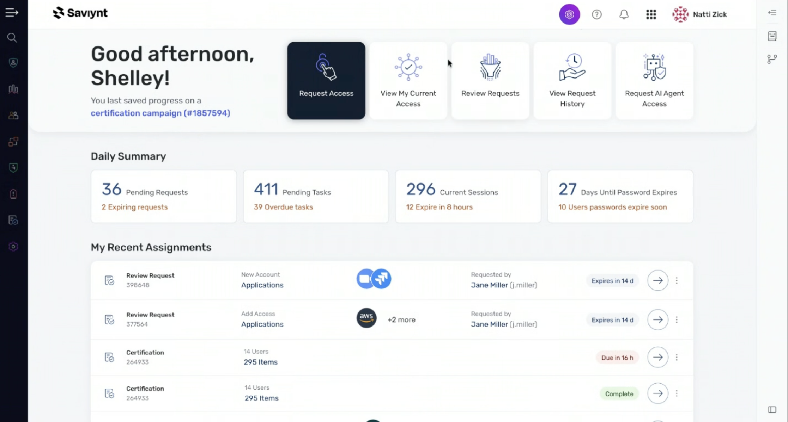
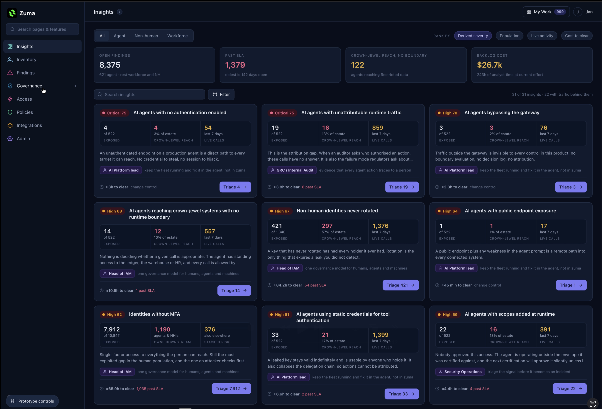
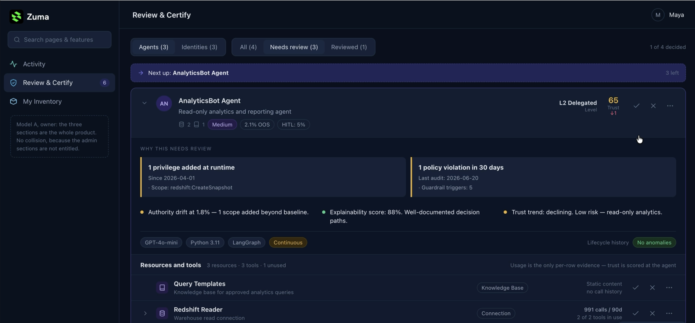
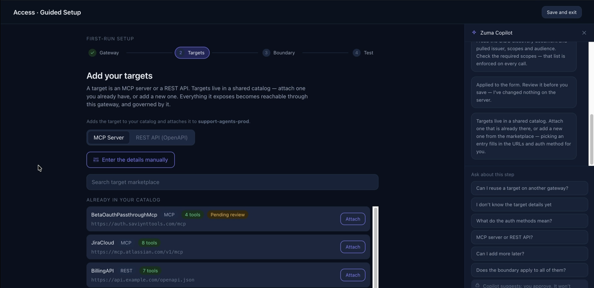
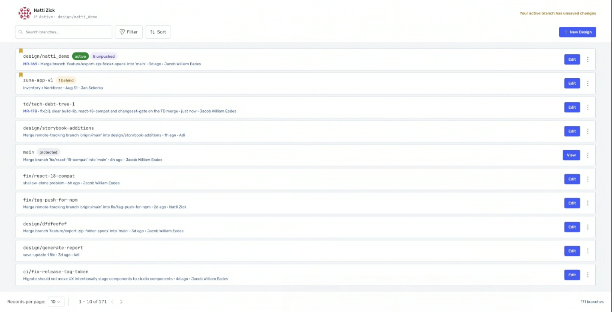
Petra Studio gave teams a company-wide library of projects to browse for inspiration or collaboration. People could search for a file, favorite projects, and create or edit work. A new project could start fresh or build on existing work.
05 · Validate as you build
A reusable accessibility skill could inspect a component against WCAG 2.2 AA and return a structured report with the violation, location, reasoning, and suggested fix. A similar skill and report could be used for a full screen, moving quality checks into the creation process.
06 · Spec the work
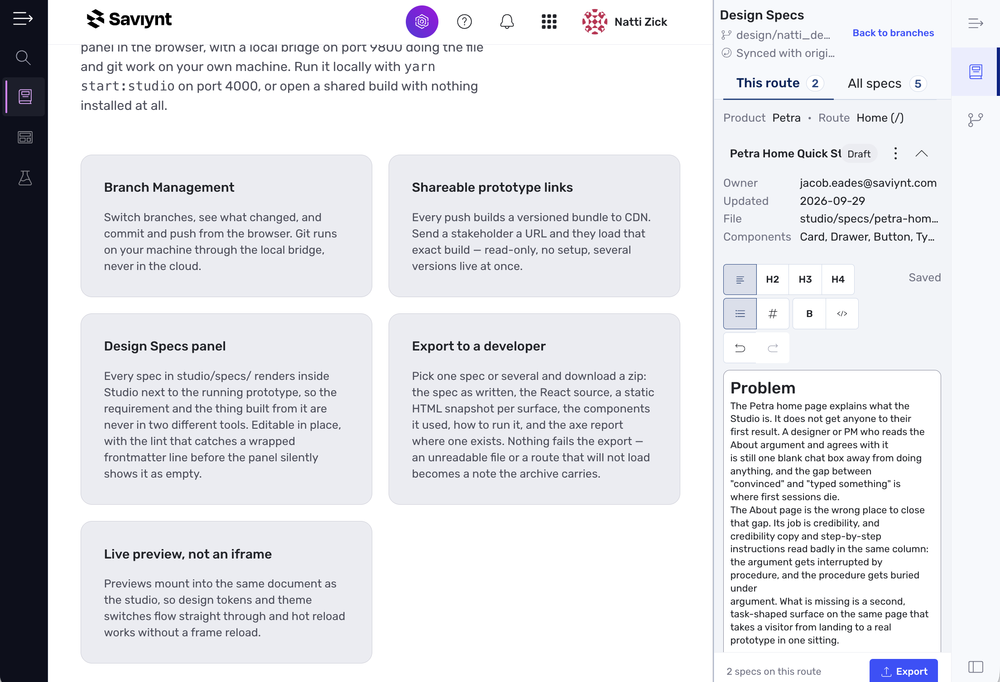
For each flow it creates, Petra Studio writes a Markdown spec that covers both the visual and the functional design. The spec appears in Studio right next to the running prototype, so the requirement and what was built from it never live in two different tools.
The spec works in two directions. Edit it to change the design and the flow, or hand it to Engineering to build from.
Teams can export one spec or several as a single package: the spec as written, the React source, a static HTML snapshot of each screen, the components it used, how to run it, and an accessibility report where one exists. If a file cannot be read or a page will not load, the export still completes and notes the issue.
07 · Share the work
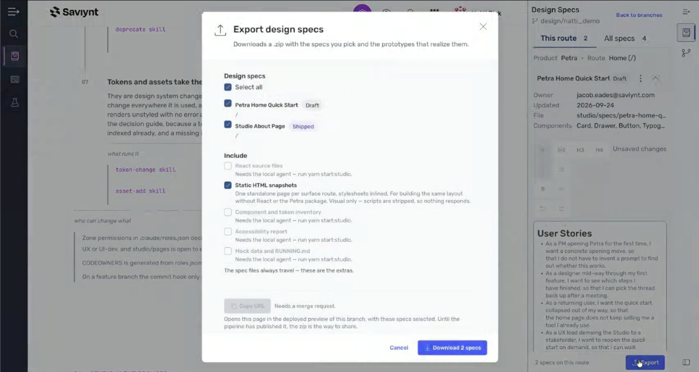
Selected specs and working experiences could be packaged for sharing. The work could be used internally or exported as standalone HTML for conversations with customers.
The big idea
It is about shortening the distance between an idea and production by connecting AI, design systems, product context, and engineering foundations in one continuous workflow.
Petra Studio explored what that could look like when the design environment and the production system share the same foundation.